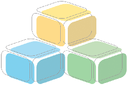

|  | |
| . | |
| Hiroshi Ishiguro | |
|
Group Leader
Professor Department of Adaptive Machine Systems Osaka University, Japan ishiguro@ams.eng.osaka-u.ac.jp http://www.eng.osaka-u.ac.jp/index-e.html |
| Research in the Digital City Project | |
| I am working as a leader of perceptual information infrastructure group in the "Universal Design of Digital Cities," sponsored by JST CREST. My research in this project is: | |
| 1. | Development of a rapid modeling method (with Kato and Koizumi) for building photo-realistic virtual worlds by using omnidirectional cameras. The method, called town digitizing, enables us to build a temple model within 8 hours. We are planning to use this technology for visual information disclosure. |
| 2. | Psychological evaluation of virtual environments (with Koizumi) |
| 3. | Human behavior recognition and automatic acquisition of town activity descriptions by using multiple omnidirectional cameras. |
| Biography | |
|
I received the B.E., M.Eng. degrees from Yamanashi University, Japan, in 1986 and 1988, respectively. Then, I received D.Eng. degree from Osaka University, Japan, in 1991. In 1991, I started working as a research assistant of Department of Electrical Engineering and Computer Science, Yamanashi University, Japan. Then, I moved to Department of Systems Engineering, Osaka University, Japan, as a research assistant in 1992. From 1991 to 1994, I developed several vision-guided mobile robots and studied on active and omnidirectonal vision. In 1994, I was an associate professor of Department of Information Science, Kyoto University, Japan, and started research of distributed vision using omnidirectional cameras. From 1998 to 1999, I worked in Department of Electrical and Computer Engineering, University of California, San Diego, USA, as a visiting scholar. From 1999, I am a visiting researcher in ATR Media Integration and Communications Research Laboratories and I have developed an interactive humanoid robot, Robovie. In 2000, I moved to Department of Computer and Communication Sciences, Wakayama University, Japan, as an associate professor. I also became a researcher of PREST, Japan Science and Technology Agency and started a venture company, Vstone Co. Ltd. as a general director. From 2001, I was a professor of Wakayama University, Japan. |
| Recent Publications | |
| 1. | Hiroshi Ishiguro, Takuichi Nishimura, VAMBAM: View and motion-based aspect models for distributed omnidirectional vision systems, Proc. Int. Joint Conf. Artificial Intelligence, 2001 (to appear). |
| 2. | Takauki Kanda, Hiroshi Ishiguro, Toru Ishida, Psychological analysis on human-robot interaction, Proc. IEEE Int. Conf. Robotics and Automation, 2001 (to appear). |
| 3. | Testuo Ono, Michita Imai, Hiroshi Ishiguro, A model of embodied communications with gestures between humans and robots, Proc. 23th Annual Meeting of the Cognitive Science Society, 2001 (to appear). |
| 4. | Takushi Sogo, Hiroshi Ishiguro, Toru Ishida, Acquisition and propagation of spatial constraints based on qualitative information, IEEE Trans. Pattern Analysis and Machine Intelligence Vol.23 pp.268-278, 2001. |
| 5. | Hiroshi Ishiguro, Distributed vision system: A perceptual information infrastructure for robot navigation, Proc. Int. Joint Conf. Artificial Intelligence, pp.36-41, 1997 |